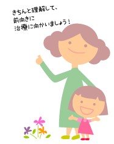

|
Lesson22 : 適切な診療のために
22-1 適切な診療のために
「お子さんはクレチン症の疑いがあります」と言われて、突然、大学病院などの大きな病院を受診することになったら、それだけで気が動転して、病院であれやこれや説明を受けても、きっと覚えていないことが多いでしょう。
しかし、お医者さんのほうは説明したつもりになって、またカルテ（医療記録）にも「○○と説明した」と書かれてしまい、その後、二度と話題に上らないことが沢山あるかもしれません。
先天性甲状腺機能低下症（クレチン症）の場合、長期にわたり診療を続ける必要があります。そのために、きちんと把握しておくべきことはいろいろあります。とくにお子さんがまだ幼い時期は、保護者の方がきちんと理解し、経過や記録を続けていくことをお勧めします。
22-2 ある程度大きくなったらクレチン症は生涯にわたり治療を続けなくてはならない場合が多いので、お子さんがある程度自分の体について理解できるようになったら、健康管理の一環として、自分の体のことを知る必要が出てくるでしょう。定期的な検査のため医療機関に行く必要もありますし、幼い時期は治療が適切に行われているかを評価するため、頻繁に採血を受けなければなりません。理由が分からないまま辛い採血を受けなければならないことは、子供にとってストレスになりかねません。定期的な検査は「健やかな成長のため」必要なこと、そのお蔭で治療がうまくいっていることがわかり、本人も家族も安心して暮らせることなどを説明し、前向きに治療に向かえるようにすることが大切です。 入院をして病型診断をする（一般的には５～６歳ごろ）までには、ある程度、お子さん自身に病気のことを理解させることが、スムーズな治療につながると考えます。 |
 |
註：大人の場合、「インフォームド・コンセント（informed consent）」、日本語訳としては「説明と同意」（あるいは「納得診療」という訳語）が、診療の前提とされています。つまり、医師からの十分な「説明」を理解「納得」し、「診療」内容に「同意」することが必要な時代と言うことです。こうした「説明と同意」は「患者中心医療」を目指す上で必要な条件ですが、ではそれ以前の医療はどのように行われてきたのでしょうか。それを表す言葉として代表的なものは、パターナリズム（paternalism、父権主義、 温情主義と訳されます）といえます。
パターナリズムは、文字通り「父親が自分の子供に対してするような仕方で、 ある人に対してふるまうこと」 を指しますが、医療の現場では、 患者に対して、その人のためになるとして（患者の意思を確かめることなく）医師などが自身の意見に基づいて処置をすることを言います。患者の立場からは「（先生に）お任せします」という態度になります。
子どもも成人に達すれば、自身が「説明と同意」の上で診療を受けることになりますが、それまでは保護者が子どもの代わりに「説明をうけ同意」します。これを「代諾」といいます。通常は患者に代わって治療方針を決定する権限のある方、つまりお子さんの親権者が代諾者となります。しかし、未成年でも自身のうける診療については、説明を受け理解することが望ましいと言えます。この場合、未成年者からえられた同意についてはコンセントとはいわず、アセント（ascent）という言葉を使います。